Mini Stereo Amplifier (TDA7266, TDA7294, STA540)
A high quality power amplifier with small size.updated on
Introduction
這是一款小巧，方便使用，功率足夠應付多種環境，單電源供電，推力好，噪音小，IC周邊電路精簡的功率放大器。放大電路最優化，電源加上達靈頓濾波電路。
Features
- 體積小
- 發熱量小
- 待機耗電量小
- 推力好
- 雜訊小
Pictures
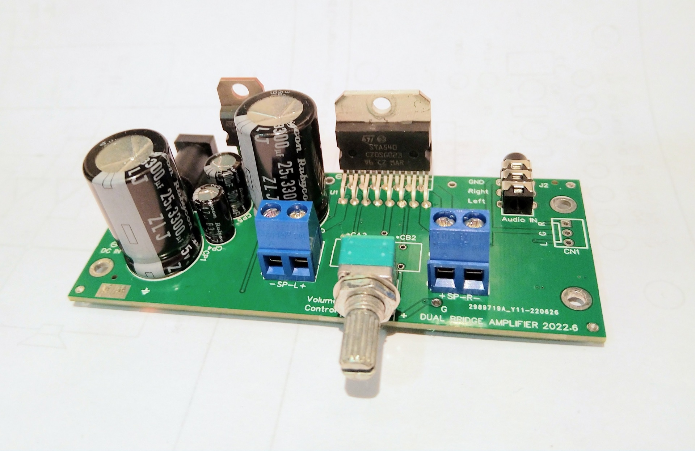
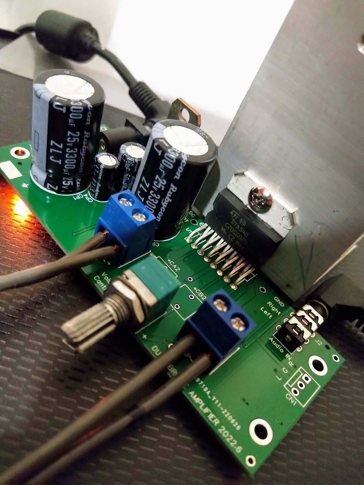
Parameter
Main IC
| 電壓放大倍數 | 電壓迴轉率 | 輸出瓦數 | 消耗電流 | |
|---|---|---|---|---|
| TDA7266 | 20 | 3.20 | 18 | 50 |
| TDA7297 | 40 | 4.57 | 18 | 50 |
| STA540 | 15.9 | 2.26 | 22.5 | 109 |
| Comment | Vi/Vo | (V/us) | (Watt) | (mA) |
- 電壓放大倍數：TDA7297 > TDA7266 > STA540 (實測 x40, x20, x15.9)
- 電壓迴轉率：TDA7297 > TDA7266 > STA540 (實測 4.57 V/us, 3.20 V/us, 2.26 V/us)
- 輸出瓦數：STA540 > TDA7297 = TDA7266 (官方數據 22.5 W, 18 W, 18 W)
- 消耗電流：STA540 > TDA7297 = TDA7266 (實測 109 mA, 50 mA, 50 mA)
主放大晶片可選擇 ST 的 TDA7266 、 TDA7297、STA540，PCB 都可兼容。這系列為 AB 類的 IC 有著失真低，雜音低，輸出推力好的優點，且輸出為 BTL 橋接模式，輸出電壓振幅大.
Sounds
| 高音量感 | 低音量感 | 均衡性 | |
|---|---|---|---|
| TDA7266 | +++ | +++ | ++++ |
| TDA7297 | ++++ | +++ | +++ |
| STA540 | ++ | ++++ | ++ |
- 高音量感：TDA7297 > TDA7266 > STA540
- 低音量感：STA540 > TDA7266 > TDA7297
- 均衡性：TDA7266 > STA540 > TDA7297
Compare
STA540 則為車用等級，它的輸出級為 Sziklai Pair BJT，值得嘗試看看。 TDA7297 的速度在這之中是最快的，高音表現比其他的好，不過波型有點振鈴現像，相比其它聽起來會比較尖銳。TDA7266 則介於 STA540 與 TDA7297。
這三顆大致上相差不會太遠，主體都一致，只差別在修飾，有地方加分則有其它地方減分。比如我在桌上型全音域喇叭 搭配 STA540 最有感染力;不過在立式三路分音大劇院喇叭卻是搭配 TDA7297 最動聽, TDA7266 迴轉率夠而且沒振鈴現象。
Optimize
- PCB 類比小訊號接地（AGND）和 電源接地 (PGND) 分離
- PCB 頂層電源接地佈局、45° 拐角佈線
- IC ST 這系列的 本身有輸出短路、過熱、高電感負載、ESD 保護
- 電晶體 充放電逆電流保護
- 喇叭輸出端 Snubber Circuit 消除 Ringing
- 訊號輸入端 使用大交連電容，極低截止頻率
- 訊號輸入端 ESD 靜電突波保護
- 訊號輸入端 高頻濾波，抗 Radio frequency 干擾
- 電源輸入端 使用低阻抗大電容，並增加 Snubber Circuit
- 電源輸入端 濾波電路 RRS 濾除雜訊與漣波
- 高品質 X7R MLCC (samsung)(murata)
- 高品質 貼片電阻
(RRS 最小工作時輸入輸出壓差只有 1.7 V. 量測筆電變壓器輸出為 19.3V, 經過 RRS 後為17.6V, 符合 IC 的 max Vcc Supply Range: 18V.)
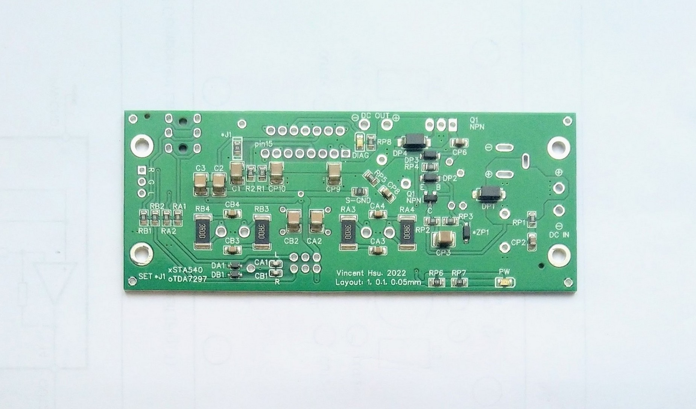
Measurement
- 靜態輸出雜訊：無輸入訊號, 喇叭輸出接腳上示波器，雜訊低於 2mV
- 靜態接腳雜訊：STA540 的控制接腳 Pin6 SVR 與 Pin7 ST-BY 雜訊低於 1mV
- 動態電壓波動：以 3吋 4 Ohm 單體當負載, 播放低頻, 控制接腳 Pin6 SVR 與 Pin7 ST-BY 波動小於 2mV, IC 電源腳波動小於 20mV
更多測量細節: Dual Bridge Power AMP - STA540 TDA7266 TDA7297 - Measurement Detail
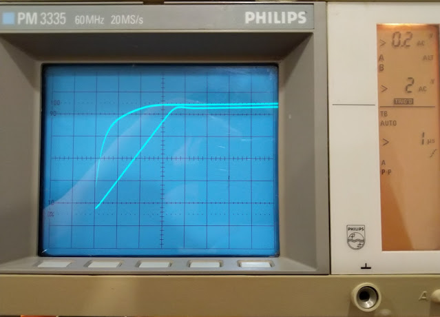
Setting
電路板可以使用不同的 IC，當使用 TDA7266 or TDA7297時: J1 要連起來; 使用 STA540時: J1 不接
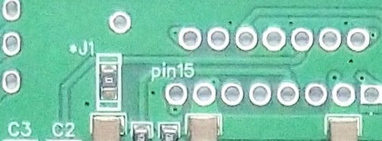
Standby Mode: 啟動的方法為 C1 將電容兩側短路，Standby Mode 時，靜態電流只有 3.2 mA
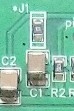
Notice
ST STA540 TDA7266 TDA7297 IC 的背面散熱面為接地，而 ST TIP122 背面散熱面為電源正電，裝散熱片或裝機殼時要小心分開，不然電源會短路。至少一個要分開或加隔離片
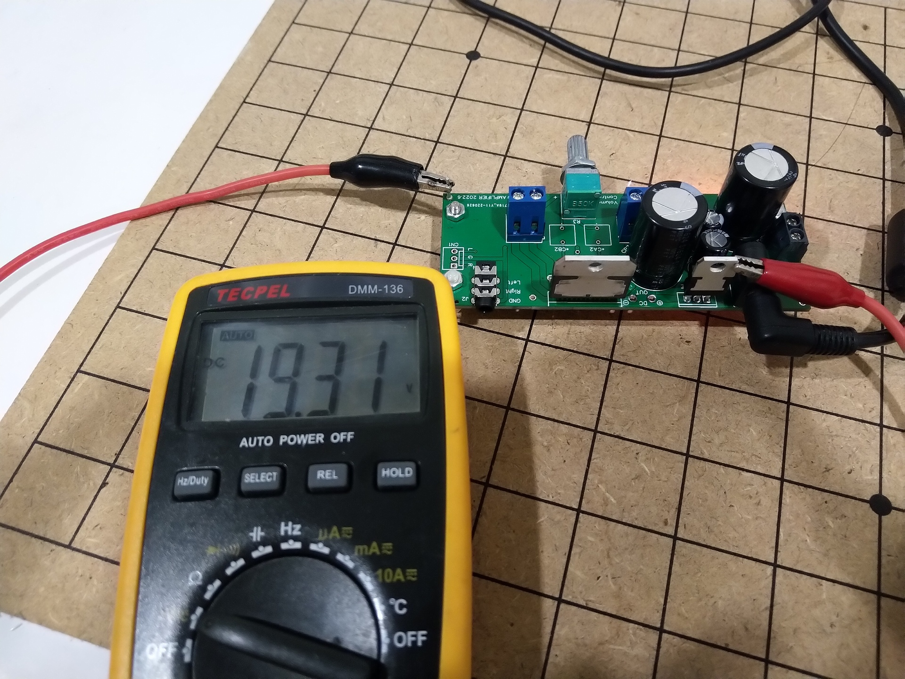
Schematic
RRP:
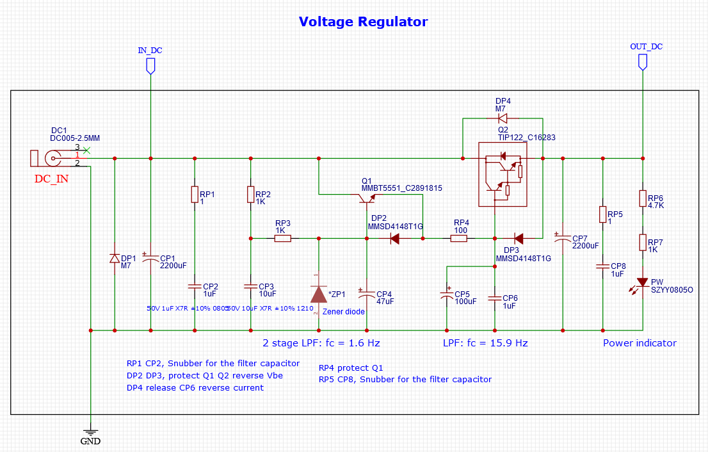
input:
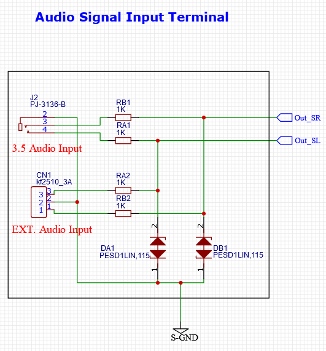
volume:
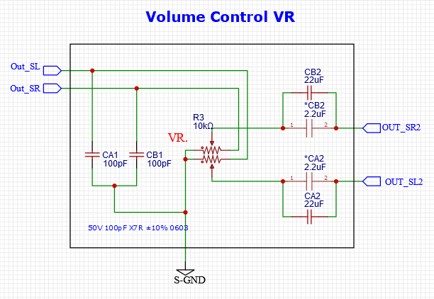
main-ic:
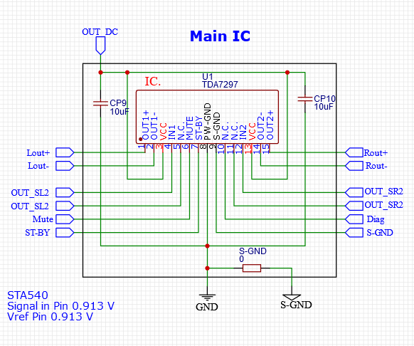
mian-ic-components:
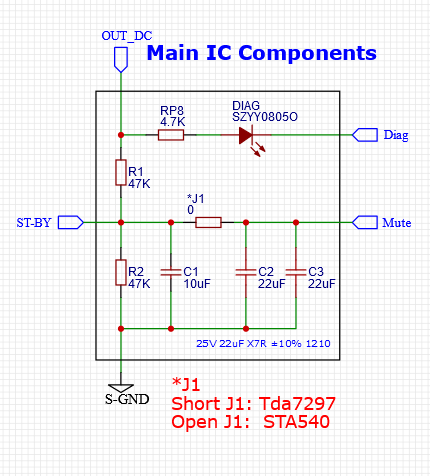
mian-ic-components:
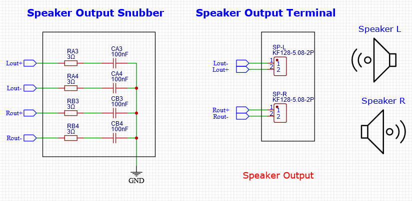
PCB
pcb-front 2d:
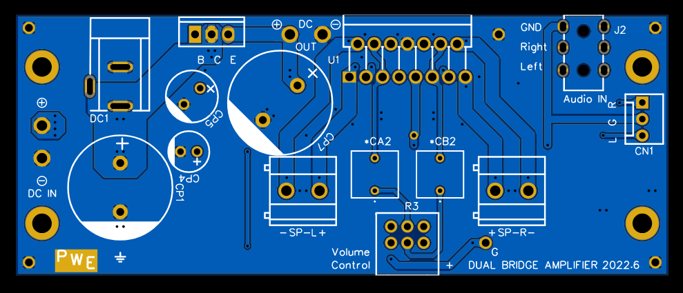
pcb-back 2d:
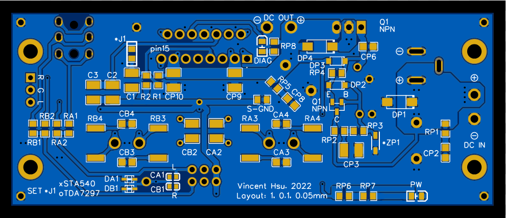
pcb-back 3d:
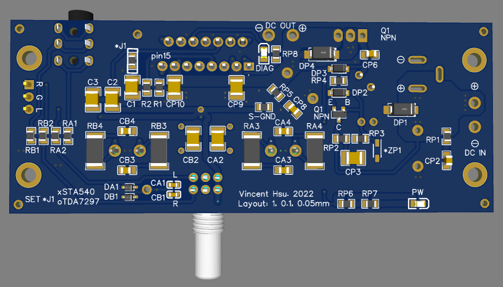
"Good design is as little design as possible."
~ Dieter Rams